Use Case
All the websites use some sort of database (RDBMS, NoSQL etc). But as the
number of users increase, there is a load on the database and user experience
deteriorates. One way is to scale up the database with more memory and CPU,
this approach is not only expensive but also reaches the hardware limit over
time.
Another approach is to use ElastiCache with Redis or Memcached to cache the
static and frequently accessed application data in the memory. Using the
ElastiCache, the website speeds up instantaneously. ElastiCache is a managed
service and there is no need to create EC2, install the Redis/Memcached, do
minor upgrades etc, AWS takes care off these tasks for us. This way we can
focus less on underlying software and infrastructure and more on the
application development.
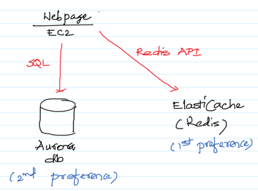
AWS Services: EC2, Aurora, ElastiCache
-- Create a Security Group called “AllowRedis” with 6379 port allowed in the Inbound Rules. Similarly, create another Security Group called “AllowMySQL” with 3306 port allowed in the Inbound Rules.
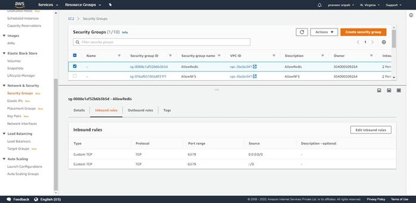
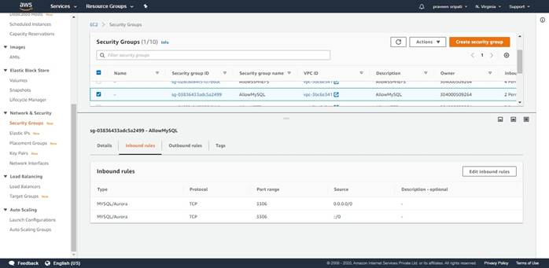
-- Go to
the RDS Management Console, click on “Create Database”. Make sure to select
“Amazon Aurora”.
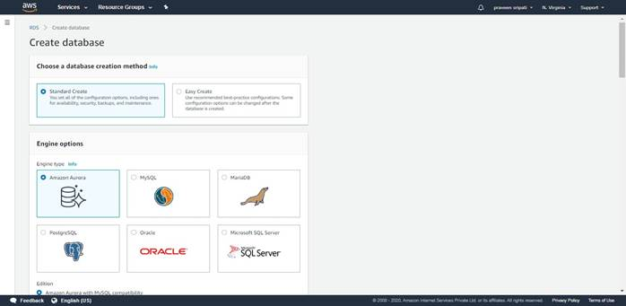
-- Go with
the default options as shown below.
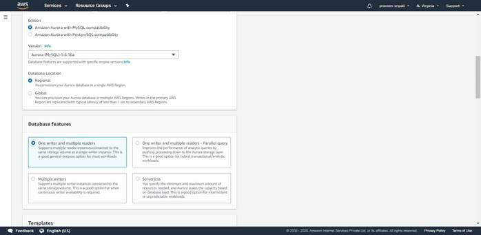
-- For the
Templates select “Dev/Test”, the “DB cluster identifier” as MyCustomerDB. Specify
the user name and password for the database.
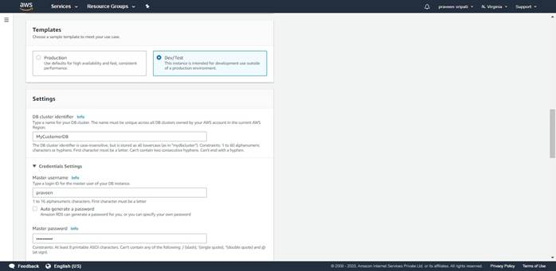
-- Select
“Burstable class” and select “db.t2.small”
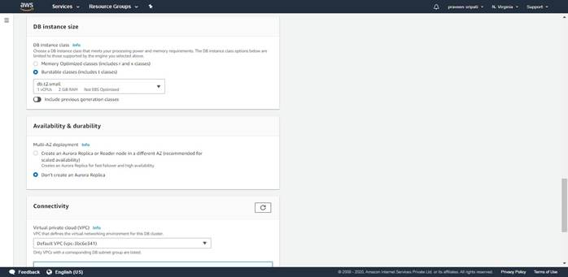
-- Under
the connectivity tab for “Publicly accessible” as Yes. For the VPC Security
Group select AllowMySQL Security Group created earlier.
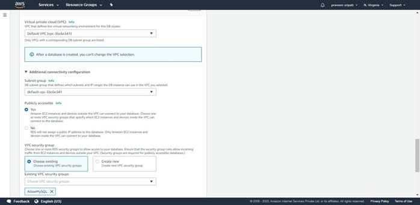
-- Under the Database options for the “Initial database name” select customer_db.
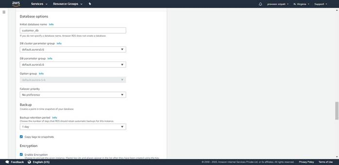
-- For the
monitoring uncheck “Enable Enhanced monitoring”.
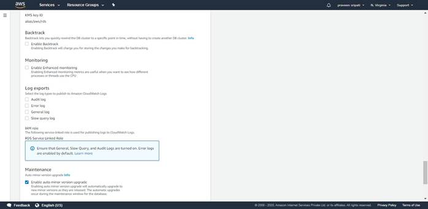
-- Click on “Create database”.

-- Initially the database would be in a Creating Status.
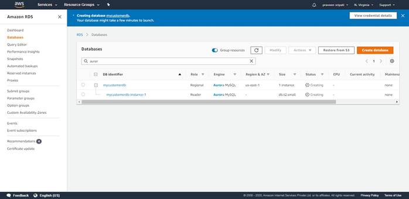
-- Within a few minutes, the Status will be changed to Available. Select the Writer Role in the same screen and note down the Endpoint.
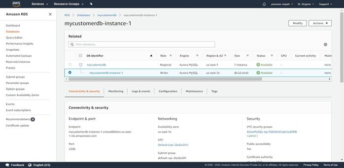
-- Download/install HeidiSQL (https://www.heidisql.com/download.php) and specify the Username, Password and the Endpoint of the RDS Aurora Instance and click on Open.
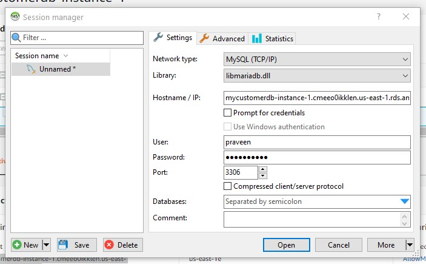
-- Click
on Yes to save the password and other details in HeidiSQL.
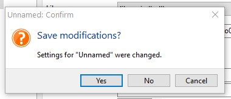
-- Make
sure to select the customer_db in the top left pane, go to the Query tab and
execute the below to create a table in Aurora Database.
CREATE TABLE customers (
name VARCHAR(30) NOT NULL,
address VARCHAR(30) NOT NULL
);
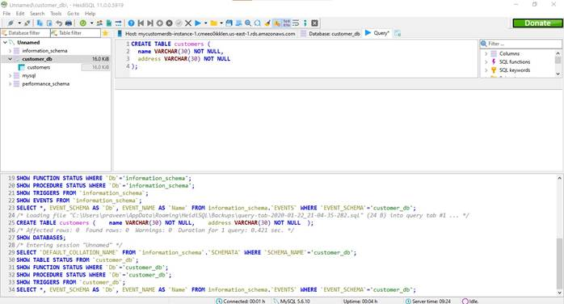
-- Along the same lines, execute the below statement to insert a row into the
customers table.
INSERT INTO customers (name, address) VALUES ("Praveen", "India");
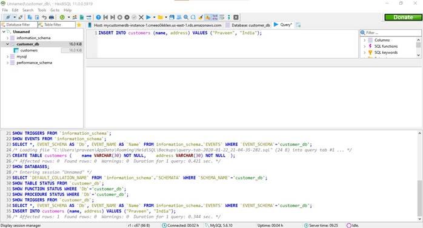
-- Go to the ElastiCache Management Console
and click on “Get Started Now”.
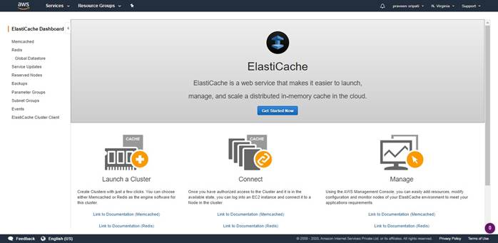
-- Make
sure to select “Redis”, the Name as “myrediscluster” and select the “Node type”
as “cache.t2.micro” as it falls under the free tier. Select the “Number of
replicas” as 0.
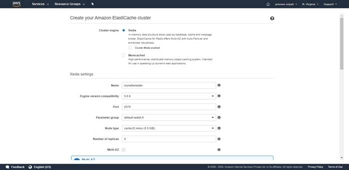
-- Select “AllowRedis” Security Group.
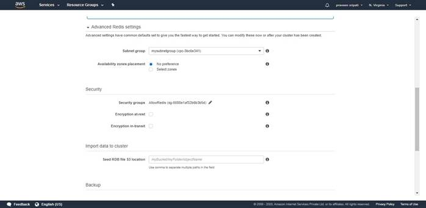
--
Unselect “Enable automatic backups” and click on “Create”.
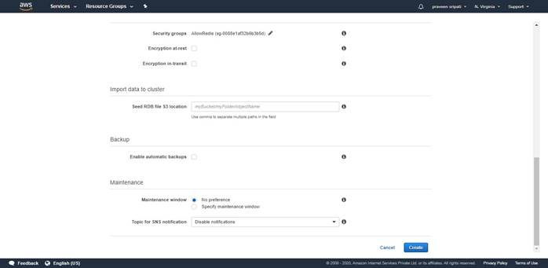
-- In a
few minutes, the Status of the ElastiCache cluster will be available and the
“Primary Endpoint” will be populated as shown below.
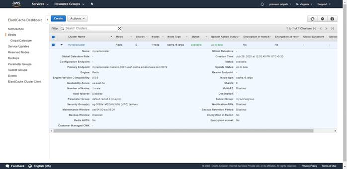
-- Create an EC2 instance with the below
details and connect to it.
- Ubuntu 18.04
- t2.micro as the instance type
- Allow 22/SSH in the inbound rule of the Security Group.
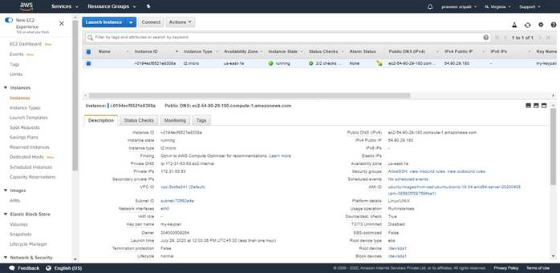
-- Login to the EC2 instance via Putty or some other SSH client and execute the below commands.
#become root
sudo su
#get the list of softwares
apt-get update
#install python and pip
apt-get install python2.7 python-pip
#install the redis and mysql-python drivers
pip
install redis mysql-connector-python
-- Create
a file insert-tuple-redis.py with the below code. Note to change the
redis_url with the ElastiCache Endpoint.
import redis
import sys
redis_url = 'myrediscluster.hwzwnc.0001.use1.cache.amazonaws.com'
r = redis.StrictRedis(host=redis_url, port=6379, charset="utf-8", decode_responses=True)
r.set(sys.argv[1], sys.argv[2])
print("Inserted a TUPLE to ElastiCache")
-- Create a file check-tuple-redis.py with the below code. Note to
change the redis_url with the ElastiCache Endpoint.
import redis
import sys
redis_url = 'myrediscluster.hwzwnc.0001.use1.cache.amazonaws.com'
r = redis.StrictRedis(host=redis_url, port=6379, charset="utf-8", decode_responses=True)
if r.get(sys.argv[1]) is None:
print("The TUPLE is not there in ElastiCache")
else:
print("The TUPLE is there in ElastiCache")
-- Create a file delete-tuple-redis.py with the below code. Note to
change the redis_url with the ElastiCache Endpoint.
import redis
import sys
redis_url = 'myrediscluster.hwzwnc.0001.use1.cache.amazonaws.com'
r = redis.StrictRedis(host=redis_url, port=6379, charset="utf-8", decode_responses=True)
r.delete(sys.argv[1])
print("Deleted a TUPLE to ElastiCache")
-- Create a file web-logic.py with the below code. Note to change the redis_url with the ElastiCache Endpoint. Also, the database details for the host, user, password and the database variables have to be changed.
import redis
import mysql.connector
import sys
redis_url = 'myrediscluster.hwzwnc.0001.use1.cache.amazonaws.com'
host = 'database-1.cmeeo0ikklen.us-east-1.rds.amazonaws.com'
user = 'praveen'
password = 'praveen123'
database='customer_db'
r = redis.StrictRedis(host=redis_url, port=6379, charset="utf-8", decode_responses=True)
if r.get(sys.argv[1]) is None:
print("The TUPLE is not there in ElastiCache")
#Connect to the RDS MySQL Instance
mydb = mysql.connector.connect(host=host, user=user, password=password, database=database)
mycursor = mydb.cursor()
mycursor.execute("SELECT * FROM customers where name = \"" + sys.argv[1] + "\"")
myresult = mycursor.fetchone()
if myresult is not None:
print("Got from the Database, so writing TUPLE to ElastiCache")
r.set(myresult[0], myresult[1])
else:
print("Not there in the Database")
else:
print("The TUPLE is there in ElastiCache")
-- Execute
the below commands on the EC2 instance. Notice the print statements in the code
and the output of the below commands. The first time the data is got from the
database and the ElastiCache is populated, the second time the data is got from
the ElastiCache and this is what makes the website faster.
#delete
the tuple with Key Praveen
python delete-tuple-redis.py Praveen
#Get the Value for Key Praveen. Notice that it is fetched from DB and
ElastiCache is populated.
python web-logic.py Praveen
#Get the Value for Key Praveen. Notice that it is fetched from ElastiCache.
python web-logic.py Praveen
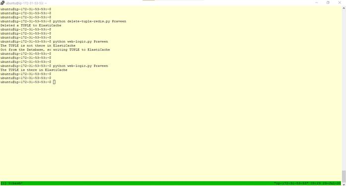